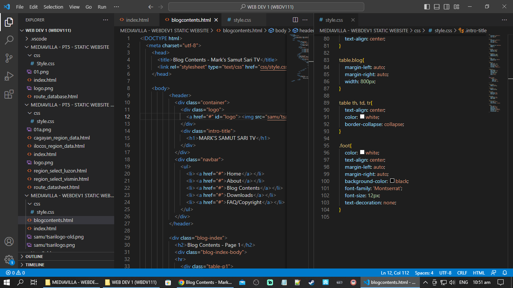

![[page logo]](samu'tsarilogo.png)
|

New Blog page Working in ProgressDate: 10 April 2023 Blog #1 This static website is created for the Web Development 1 project in Our Lady of Fatima University - Antipolo. Tags: General | Year: Q2 2023: April 2023 |

"Masinag Junction"Date: 30 April 2023 Blog #2 Masinag Junction - This route was utilized for travellers bound for Marilaque Highway, or Antipolo Details of Interesection:
From Antipolo via Sumulong Highway:
From Marikina via Sumulong Highway:
From Infanta, Quezon via Marcos Highway:
Tags: Archived Shots | Year: Q2 2023: April 2023 |

"Bongabon Ride"Date: 08 April 2023 Blog #3 Bongabon trip last 08 April 2023. Consists of 3 parts. WATCH ON MARK'S SAMUT SARI FB PAGE (REQUIRES LOGIN ON YOUR FACEBOOK ACCOUNT): Tags: Provincial Rides | Year: Q2 2023: April 2023 |

"Three Country Corner"Date: 04 May 2023 Blog #4 Screenshot at Bregenz, facing Lake Constance with a passing train to Lindau. This is driven using Tags: Railroad Simulation | Year: Q2 2023: May 2023 |